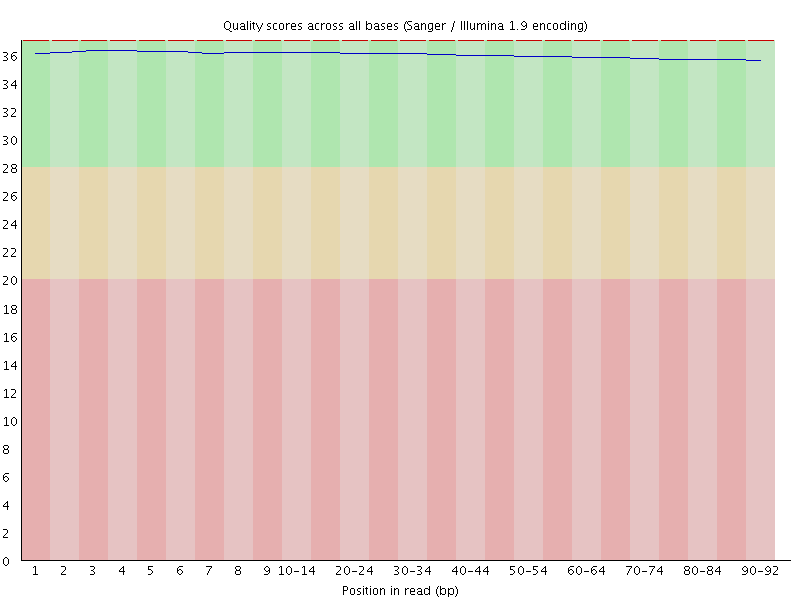
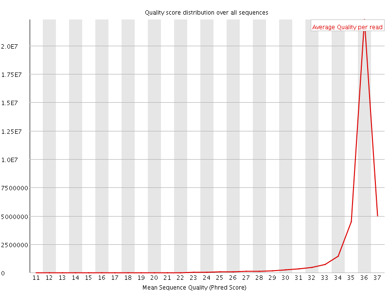
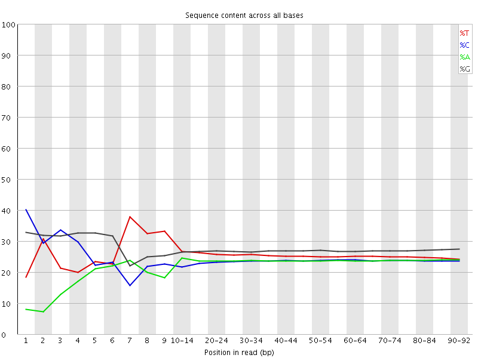
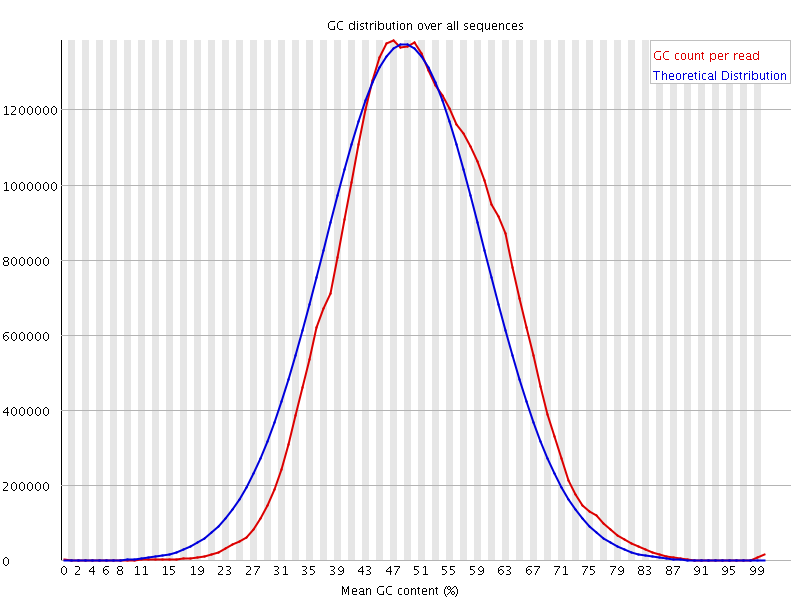
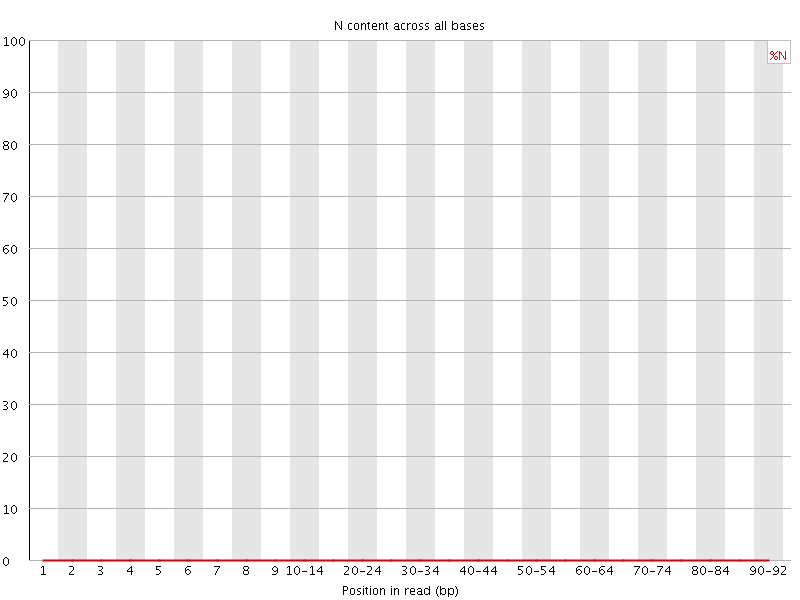
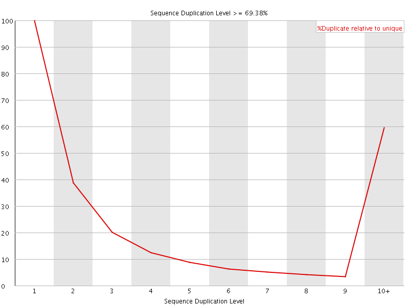
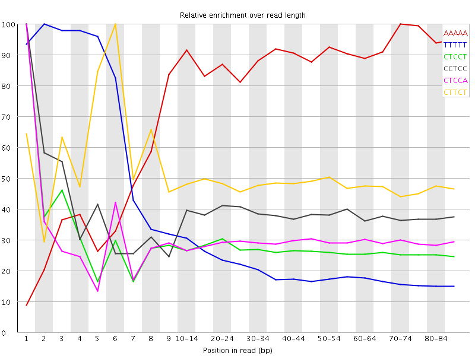

![[OK]](Icons/tick.png) Basic Statistics
Basic Statistics
| Measure | Value |
|---|---|
| Filename | SAMPLE_002_R2.fastq.gz |
| File type | Conventional base calls |
| Encoding | Sanger / Illumina 1.9 |
| Total Sequences | 36145270 |
| Filtered Sequences | 0 |
| Sequence length | 92 |
| %GC | 51 |
Per base sequence quality

Per sequence quality scores

Per base sequence content

Per base GC content

![[WARN]](Icons/warning.png) Per sequence GC content
Per sequence GC content

Per base N content

Sequence Length Distribution

Sequence Duplication Levels

Overrepresented sequences
No overrepresented sequences
Kmer Content

| Sequence | Count | Obs/Exp Overall | Obs/Exp Max | Max Obs/Exp Position |
|---|---|---|---|---|
| AAAAA | 10183765 | 4.7364 | 5.5387216 | 70-74 |
| TTTTT | 14740605 | 4.237511 | 17.032156 | 2 |
| CTCCT | 7759945 | 2.7181787 | 9.886256 | 1 |
| CCTCC | 7154835 | 2.6768677 | 6.8991575 | 1 |
| CTCCA | 6836035 | 2.6364074 | 8.866606 | 1 |
| CTTCT | 7816250 | 2.5633614 | 5.2299204 | 6 |
| TCCTC | 6980580 | 2.4451802 | 6.130467 | 2 |
| GGGGG | 11308585 | 2.3637426 | 8.740946 | 1 |
| CCCAG | 6490180 | 2.348466 | 6.8531184 | 1 |
| CTTCA | 6050400 | 2.1846626 | 5.471891 | 6 |
| TCCAG | 6286835 | 2.129863 | 5.0095005 | 2 |
| CCCCA | 4871830 | 2.0068195 | 8.459264 | 1 |
| CTGGG | 7660495 | 1.9427557 | 5.631704 | 1 |
| CTCCC | 4993605 | 1.8682779 | 9.209199 | 1 |
| CCTCT | 5221420 | 1.8289759 | 5.709758 | 3 |
| TTTTC | 5854360 | 1.7975578 | 5.103623 | 7 |
| CCCAC | 4086405 | 1.6832848 | 5.2579317 | 1 |
| GGGGC | 7009050 | 1.6677837 | 5.305524 | 2 |
| GGGGA | 6746110 | 1.6546836 | 5.436955 | 1 |
| GTGGG | 6625870 | 1.4760993 | 5.301086 | 1 |
| CCCCC | 3593120 | 1.435843 | 6.1384225 | 1 |
| TTTTG | 5067585 | 1.3668343 | 5.274194 | 7 |
| CCCCT | 3421130 | 1.2799613 | 5.1906753 | 1 |
| CGGGG | 4521965 | 1.075989 | 6.395369 | 1 |